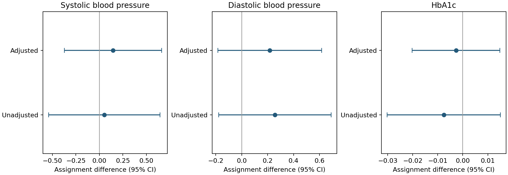

Why the lottery matters
In 2008, Oregon used a lottery to give people on a waiting list the chance to apply for Medicaid. Selection opened the application process, and enrollment still depended on applying and qualifying. A random draw helps make groups comparable before enrollment, something ordinary comparisons of insured and uninsured people cannot assume. Original study
I compared the groups as assigned by the lottery, regardless of whether anyone ultimately enrolled. The teaching extract has 5,796 selected and 6,338 unselected records.
What I checked before modeling
I reviewed outcome distributions, compared baseline characteristics across assignment groups and checked missing values by outcome. Both blood pressure measures were available for all 12,134 records. HbA1c, a measure of longer-term blood sugar, was missing for 78 records.
The data check that changed the analysis
In all 12,134 records, cvd_risk_composite equaled the sum of five yes-or-no indicators for diagnoses recorded before the lottery: diabetes, high blood pressure, high cholesterol, heart attack and congestive heart failure. The count describes baseline health. I excluded it from the follow-up analysis and kept the three measured health outcomes.
What I found
All three adjusted estimates were close to zero, and every 95% confidence interval included zero.
| Outcome | Estimate (95% CI) | Model n |
|---|---|---|
| Systolic blood pressure | +0.145−0.373 to 0.663 | 12,134 |
| Diastolic blood pressure | +0.216−0.184 to 0.616 | 12,134 |
| HbA1c | −0.0027−0.0203 to 0.0149 | 12,056 |
Differences are selected minus unselected, on the extract’s recorded scales. The sample size is the number of records used by each adjusted model.


How I estimated the differences
I compared simple group means and regressions that adjusted for baseline characteristics, including the number of household members on the lottery list as categories. Both sets of confidence intervals account for the possibility that outcomes within a household are related.
How to read the result
The intervals allow for differences in either direction. The estimate describes the opportunity to apply for Medicaid. Similar HbA1c missingness rates across groups leave open the possibility that missing values are related to health. This unweighted teaching analysis covers three outcomes using an extract with limited sampling and transformation documentation. The published experiment used survey weights and also estimated effects of coverage.